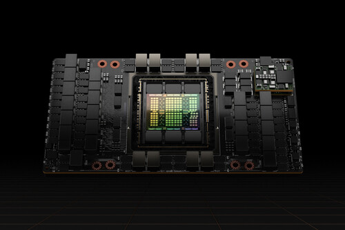

OpenAI es una fundación originada por Elon Musk y
ahora
muy
apoyada por Microsoft, entre otros, que promueve la
investigación y desarrollo de redes neuronales de última generación con alto impacto en la sociedad.

La compañía Microsoft anunció este martes en su sede de Redmond, Estados Uidos,
que su buscador Bing contará con una versión asistida por la inteligencia
artificial (IA) en colaboración con OpenAI

Palabra de Bill Gates. Para el cofundador de Microsoft el desarrollo de la inteligencia
artificial (IA) es tan fundamental como lo fue en su momento la invención del microprocesador,
el ordenador personal, internet o el teléfono móvil.